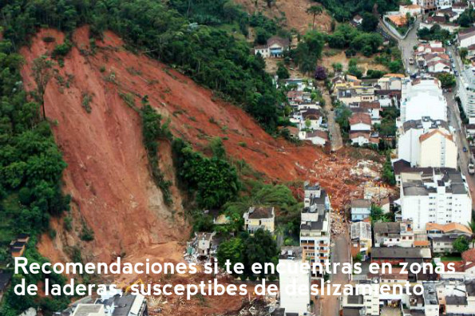

Asegúrate de que tu vivienda esté firmemente construida y bajo las normas vigentes, así se pueden evitar daños a su infraestructura.
Asegúrate de que tu vivienda esté firmemente construida y bajo las normas vigentes, así se pueden evitar daños a su infraestructura.|  |
Recomendaciones si te encuentras en zonas de laderas, susceptibles a deslizamientos
Asegúrate de que tu vivienda esté firmemente construida y bajo las normas vigentes, así se pueden evitar daños a su infraestructura.
Incentiva a tus vecinos a conservar la vegetación en las laderas y quebradas para evitar la erosión. La vegetación evita los deslizamientos.
Asegúrate de que exista un sistema de drenaje adecuado, despejado y limpio. Si el agua se filtra en el interior de tu terreno, podría generar deslizamientos.
Revisa constantemente si existen fisuras o saturación del suelo con agua lluvia. Informa al respecto a las instancias locales competentes.
Elabora un plan de emergencia familiar.
Ten lista la mochila de emergencia con agua, alimento y ropa adecuada. Llévala en caso de evacuación.
Identifica las zonas seguras, rutas de evacuación, familia acogiente o albergue más cercanos.
Mantente informado sobre la predicción meteorológica de lluvias en tu sector.